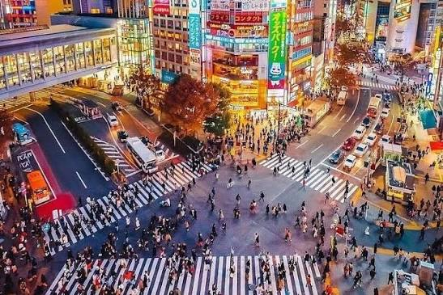
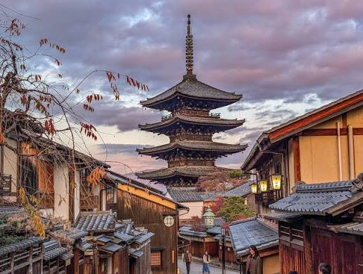
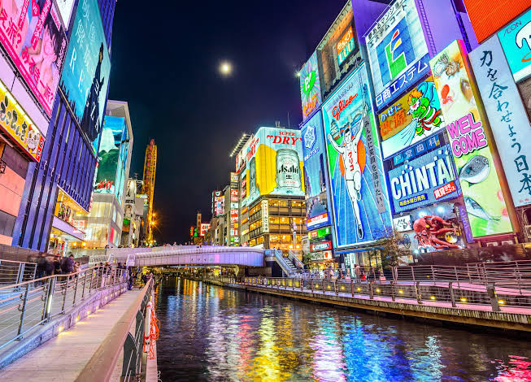

Tokyo is the main city of Japan. It is reconized by many people because of it's landmarks, especially Shibuya Crossing which is the most busiest crossroad of all time.

Kyoto is one of the most visited cities in Japan. Known by many tourists by it's place to meditate and great photo spots.

Osaka is also one of the most visited cities in Japan. It is the most popular cities for tourists, Known by it's nature spots and famous sakura trees.
